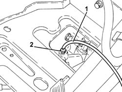

0010T40 hydraulic system for gearbox with hydraulic selection bleed air
- Path
- Procedures > 00 MAINTENANCE > 0010 NEW UNITS AND PLANNED MAINTENANCE'. > 0010T vehicle oil and fluids > 0010T40 hydraulic system for gearbox with hydraulic selection bleed air
- Kind
- repair procedure (removal / refitting; the operation number is the code)
- Applies to
- engines: 2.0 JTS, 3.2 V6, 2.0 JTS; all production periods
- Interactive page
- https://sloeber94.github.io/elrnDB-a156/en/#/3237412
Applies to: engines: 3.2 V6; all production periods; only with equipment: Smart gearbox
Proceed with removal 5530B10 battery - r+r .
Supply the vehicle using an auxiliary battery.
1. Connect a suitable collection system (pipe and reservoir) to the bleed valve on the clutch operating cylinder.
2. Loosen the bleed screw on the clutch master cylinder.
Operate the electric pump for 20 seconds until the air is completely expelled.
Tighten the bleed screw to the recommended torque.
 | Fastening | Component | Ø | Value (daNm) |
|---|---|---|---|---|
- | - | - | - | - |
Remove the collection system (pipe and reservoir) from the bleed screw on the clutch actuator cylinder.

Applies to: engines: 3.2 V6; all production periods; only with equipment: Smart gearbox
Connect the Examiner diagnostic equipment.
Keep the brake pedal depressed.
Select 'Alfa Selespeed' on the Examiner.
Select 'Control Unit Test' on the Examiner and select the 'Marelli Selespeed Automatic Transmission'.
Press 'Active Diagnosis' on the Examiner and select 'Clutch bleeding'.
Continue with the procedure on the Examiner.
Disconnect the auxiliary battery.
Proceed with refitting 5530B10 battery - r+r .
Applies to: engines: 2.0 JTS, 2.0 JTS; all production periods; only with equipment: Smart gearbox
Proceed with 2127C06 Electro-hydraulic selection manual gearbox HYDRAULIC SYSTEM - Bleeding air .